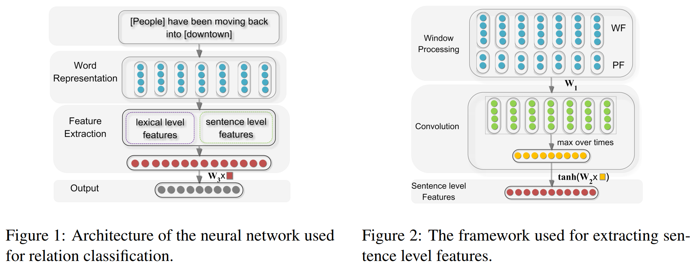
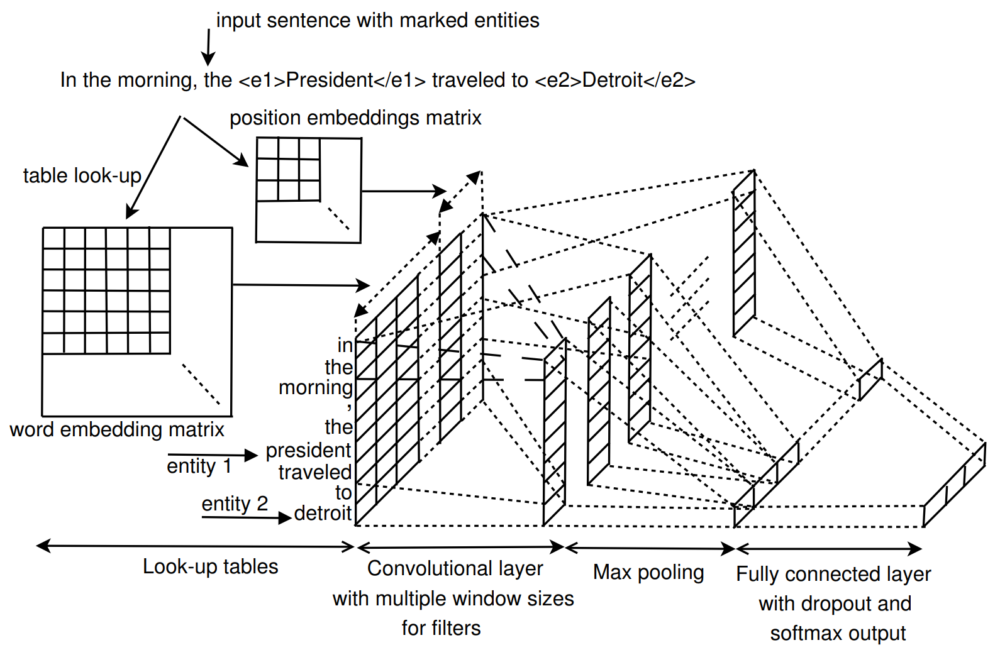
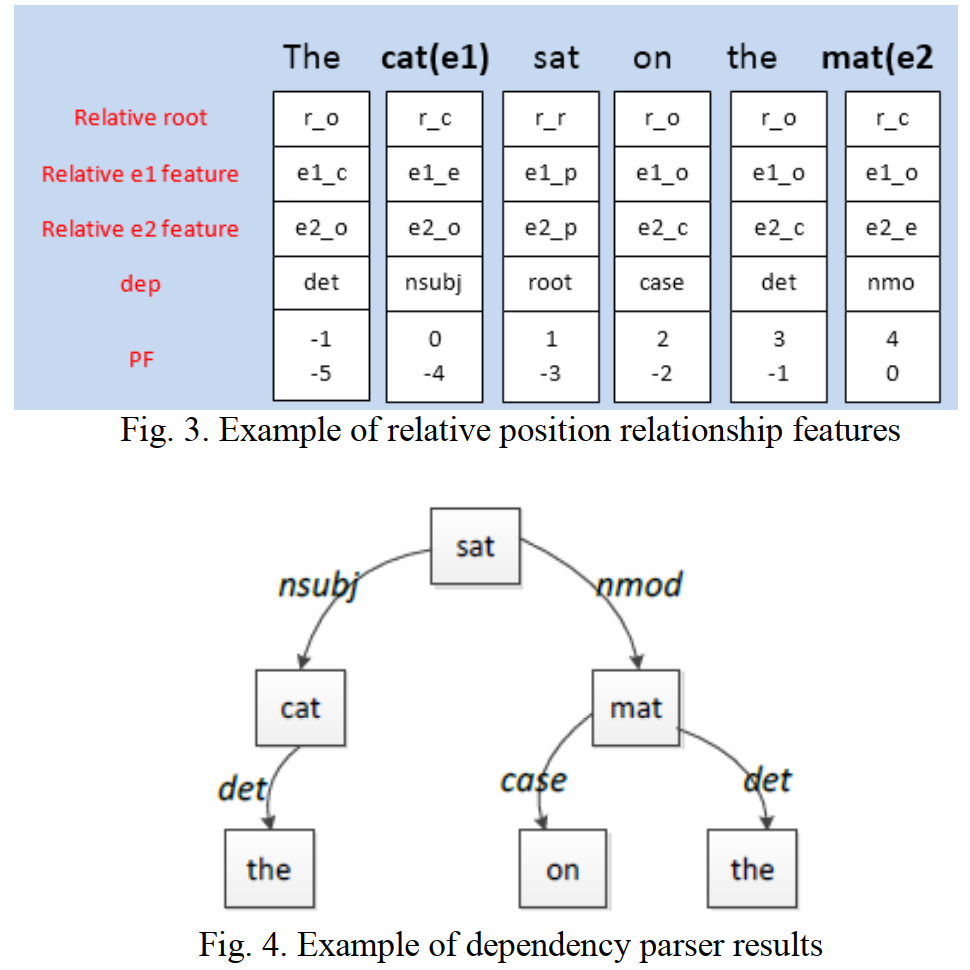
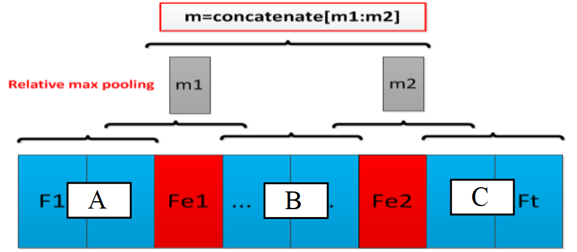
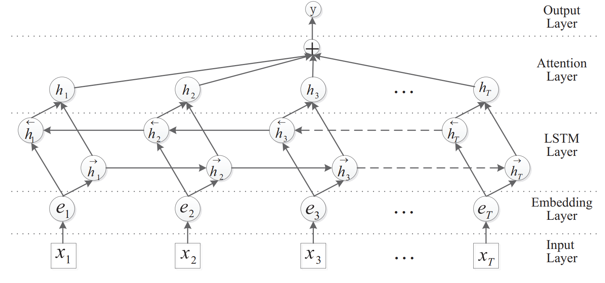
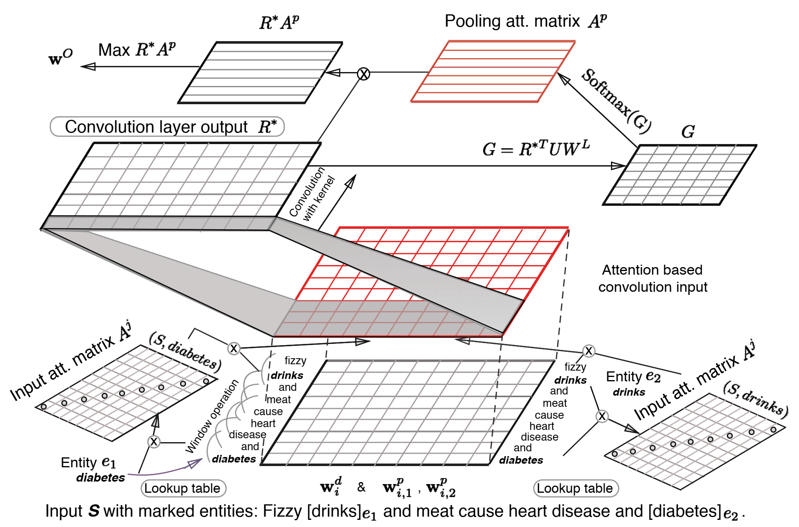
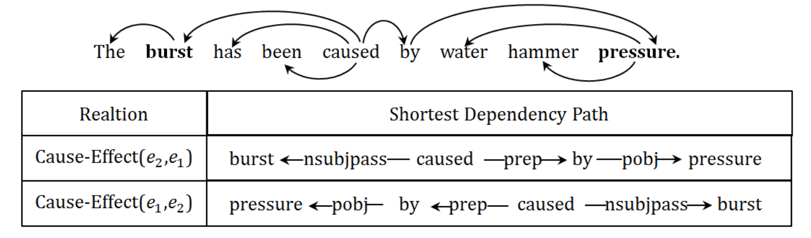
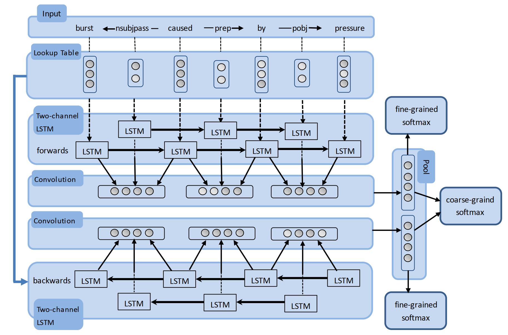

原文连接:https://www.cnblogs.com/sandwichnlp/p/12020066.html
目录
- 简介
- 关于关系抽取
- Pipline Model
- Model 1: Relation Classification via Convolutional Deep Neural Network
- Model 2: Relation Extraction: Perspective from Convolutional Neural Networks
- Model 3: Classifying Relations by Ranking with Convolutional Neural Networks
- Model 4: Bidirectional Long Short-Term Memory Networks for Relation Classification
- Model 5: Attention-Based Bidirectional Long Short-Term Memory Networks for Relation Classification
- Model 6: Relation Classification via Multi-Level Attention CNNs
- Model 7: Bidirectional Recurrent Convolutional Neural Network for Relation Classification
- Pipline Model 性能对比
简介
信息抽取（information extraction），即从自然语言文本中，抽取出特定的事件或事实信息，帮助我们将海量内容自动分类、提取和重构。这些信息通常包括实体（entity）、关系（relation）、事件（event）。例如从新闻中抽取时间、地点、关键人物，或者从技术文档中抽取产品名称、开发时间、性能指标等。
显然，信息抽取任务与命名实体识别任务类似，但相对来说更为复杂。有时，信息抽取也被称为事件抽取（event extraction）。
与自动摘要相比，信息抽取更有目的性，并能将找到的信息以一定的框架展示。自动摘要输出的则是完整的自然语言句子，需要考虑语言的连贯和语法，甚至是逻辑。有时信息抽取也被用来完成自动摘要。
由于能从自然语言中抽取出信息框架和用户感兴趣的事实信息，无论是在知识图谱、信息检索、问答系统还是在情感分析、文本挖掘中，信息抽取都有广泛应用。
信息抽取主要包括三个子任务：
- 实体抽取与链指：也就是命名实体识别
- 关系抽取：通常我们说的三元组(triple)抽取，主要用于抽取实体间的关系
- 事件抽取：相当于一种多元关系的抽取
由于工作上的原因，先对关系抽取进行总结，实体链指部分之后有时间再补上吧。
关于关系抽取
关系抽取通常再实体抽取与实体链指之后。在识别出句子中的关键实体后，还需要抽取两个实体或多个实体之间的语义关系。语义关系通常用于连接两个实体，并与实体一起表达文本的主要含义。常见的关系抽取结果可以用SPO结构的三元组来表示，即 (Subject, Predication, Object)，如
中国的首都是北京 ==> (中国, 首都, 北京)
关系抽取的分类：
- 是否有确定的关系集合：
- 限定关系抽取：事先确定好所有需要抽取的关系集合，则可讲关系抽取看作是一中关系判断问题，或者说是分类问题
- 开放式关系抽取：需要抽取的关系集合是不确定的，另一方面抽取预料的所属领域也可能是不确定的
- 关系抽取可以用有监督、半监督甚至是无监督的方法来做。
- 有监督学习：监督学习的关系集合通常是确定的，我们仅需要将其当作一个简单的分类问题来处理即可。高质量监督数据下的监督学习模型的准确率会很高，但缺点就是需要大量的人力成本和时间成本来对文本数据进行标注，且其难以扩展新的关系类别，模型较为脆弱，泛化能力有限
- 半监督学习利用少量的标注信息作为种子模版，从非结构化数据中抽取大量的新的实例来构成新的训练数据。主要方法包括 Bootstraping 以及远程监督学习的方法
- 无监督学习一般利用语料中存在的大量冗余信息做聚类，在聚类结果的基础上给定关系，但由于聚类方法本身就存在难以描述关系和低频实例召回率低的问题，因此无监督学习一般难以得很好的抽取效果。
- 对于有监督的关系抽取任务，通常也将其分为两大类
- Pipline：将实体抽取与关系抽取分为两个独立的过程，关系抽取依赖实体抽取的结果，容易造成误差累积
- Joint Model：实体抽取与关系抽取同时进行，通常用模型参数共享的方法来实现
随着深度学习以及词向量的发展，近年来大多的关系抽取模型都采用词向量作为关系抽取的主要特征，且均取得了非常好的效果。限于篇幅，本文仅对有监督学习下的 Pipline 经典模型进行介绍
Pipline Model
Model 1: Relation Classification via Convolutional Deep Neural Network
原文链接：https://www.aclweb.org/anthology/C14-1220/
在深度学习兴起之前，关系抽取的传统方法依赖于特征工程，而这些特征通常由预先准备的NLP系统得到，这容易在构造特征的过程中造成误差累积，阻碍系统性能。
该论文属于早期使用深度卷积网络模型解决关系抽取任务的经典论文。该论文将关系抽取问题定义为：给定一个句子 \(S\) 和名词对 \(e_1\) 和 $e_2 $，判断 \(e_1\) 和 \(e_2\) 在句子中的关系，即将关系抽取问题等效为一个关系分类问题。与传统的方法相比，该模型只需要将整个输入句子以及简单的词信息作为输入，而不需要认为构造特征，就能得到非常好的效果。模型的主要架构如下所示：

模型的输入主要包括两个部分，即词汇级别特征以及句子级别特征：
lexical level features：词汇级别特征包括实体对\(e_1\) 和 \(e_2\) 的词嵌入向量，\(e_1\) 和 \(e_2\) 的左右两边词的词嵌入向量，以及一个 WordNet 上位词向量。WordNet 上位词特征指的是 \(e_1\) 和 \(e_2\) 同属于哪一个上位名次，如“狗”和“猫”的上位词可以是“动物”或者“宠物”，具体需要参考的 WordNet 词典是怎样构建的。直接将上述的5个向量直接拼接构成词汇级别的特征向量 \(l\)
- sentence level feature：句子级别特征采用最大池化的卷积神经网络作为主要特征抽取模型，输入特征包括词向量信息以及位置向量信息。
- Word Features：为了能够抽取到每个词完整的上下文信息，在句子首位额外添加了Padding字符，Word Embedding 层是预训练得到的，并且参与后续的训练任务
- Position Features：额外增加了时序特征来弥补卷积网络对时序特征抽取能力不足的缺陷。论文中的做法是为每个词拼接两个固定维度的位置向量，分别表示词距离两个关键实体的相对位置信息。如“中国 的 首都 是 北京”，“的”与“中国”的距离大小为 1，与“北京”的距离大小为 -3，再将 1 和 -3 在 Position Embedding 层中查表得到，Position Embedding 层是随机初始化的，并且参与到模型训练当中
- 将上述的 Word Features 与 Position Features 拼接，输入到卷积网络中，再用Max Pooling 层把每个卷积核的输出进行池化操作。再将池化结果通过一个全连接层，激活函数为 \(tanh\)，将其看作一个更高层次的特征映射，得到最终的句子级别的特征向量 \(g\)
将词汇级别特征与句子级别特征直接拼接，即\(f = [l; g]\)，最终将其送入分类器进行分类。
小结：该模型将关系抽取任务利用神经网络进行建模，利用无监督的词向量以及位置向量作为模型的主要输入特征，一定程度上避免了传统方法中的误差累积。但仍然有 lexical level feature 这个人工构造的特征，且 CNN 中的卷积核大小是固定的，抽取到的特征十分单一
Model 2: Relation Extraction: Perspective from Convolutional Neural Networks
原文链接：https://www.aclweb.org/anthology/W15-1506/
该论文首先提出关系分类和关系抽取两个主要任务：
- 关系分类：两个实体之间存在多个关系类型，并且这多个可能关系中有一个 non-relation 类别，这多个类别的样本数量基本是平衡的
- 关系抽取：关系抽取与关系分类的区别在于，关系抽取中的 non-relation 类别的样本数目可能远远超过其他类别的样本数目，这样的任务更有挑战性，但在实际中有更为广泛的应用

论文主要关注的是关系抽取任务。与 Model 1 类似，同样是利用卷积神经网络作为主要的特征抽取模型，模型细节如下所示：
- Look-up tables：包括 word embedding 层和 position embedding 层两个部分。word embedding 为预训练得到，而 position embedding 则随机初始化，两者均参与训练。对于输入句子长度，将其限定在两个实体可能的最大长度的范围内，假设句子长度为 \(n\)，用 \(i-i_1\) 和 \(i-i_2\) 表示地i个词距离第一个实体和第二个实体的距离，则 position embedding 层的维度为\((2n-1) \times m_d\)，其中\(m_d\) 为位置向量的维度。假设句子中第 \(i\) 个词的词向量为 \(e_i\) ，位置向量为 \(d_{i1}\) 和 \(d_{i2}\)，则该词的词表征为 \(x_i = [e_i; d_{i1}; d_{i2}]\)
- Convolutional layer：该模型的卷积层借鉴了 TextCNN 的模型结构，通过设计多个不同宽度的卷积核来抽取不同粒度大小的特征来提升模型性能。
- Pooling layer：最大池化操作，用于抽取最重要的特征
- Classifier：全连接层，激活函数为softmax，还使用了 dropout 和 l2 正则化策略
小结：该论文的模型输入完全没有人工特征，且使用多宽度大小的卷积核进行特征抽取，相对于 Zeng 的效果来说仅提升了 \(0.1\%\)，个人认为提升的主要关键点在于多粒度大小的卷积核上，而 lexical feature 在这种简单的深度学习模型上还是能够起到一定的效果的，这在之后的工作中也得到了证实
Model 3: Classifying Relations by Ranking with Convolutional Neural Networks
原文链接：https://www.aclweb.org/anthology/P15-1061/

这篇论文同样是在 Model 1 基础上的改进，模型的基本架构与之前基本一致，最大的改变损失函数。模型结构如上图所示，主要有以下几个部分：
- 模型仅将整个句子作为输入，不考虑 lexical level feature。输入词表征包括 Word Embedding 和 Position Embedding 两个部分，获取方式与之前一样
- 卷积层为窗口为 3 的固定大小的卷积核，且也对输出进行了最大池化操作
对于得到的编码表征，输入一个全连接层，得到每个类别的非归一化分数，但不再对输出做 softmax 操作，而是直接对正类别和负类别进行采样，从而计算损失函数，损失函数(pairwise ranking loss function)如下所示：
这个损失函数主要有以下几个特点：
\[L = log(1 + exp(\gamma(m^+-s_{\theta}(x)_{y^+}))) + log(1 + exp(\gamma(m^-+s_{\theta}(x)_{c^-})))\]- \(m^+\) 和 \(m^-\) 为 margin 参数，\(\gamma\) 为缩放因子
- \(s_{\theta}(x)\) 为模型输出的非归一化分数，\(y^+\) 为正确标签，\(c^-\) 为错误标签中分数大于 \(m^-\) 的那些标签，作者认为这些标签具有更大的信息量。
- 显然，损失函数 L 将随着 \(s_{\theta}(x)_{y^+}\) 的增大而减小，随着 \(s_{\theta}(x)_{c^-}\) 的减小而减小
- 此外，模型还考虑了两个实体不属于任何类别，将其看作类别 "Other"，在训练的过程中，不考虑这个类别的分类，或者说在全连接层为该类别分配了一个不可训练的零初始化的神经元，对于该类别为正确标签的训练样本，损失函数的第一项为0，只保留第二项。在预测的时候，只当某个样本所有类别分数为负数时，才将其分类为 "Other"
模型在训练过程中还额外添加了 L2 正则化项
小结：该模型的主要创新点在于其 Ranking loss 上，相比于 Softmax 函数，其能够使得模型不仅仅考虑到正类别分数要尽量高，还要关注易分类错误的类别分数尽量低。其缺点仍然是模型结构上的缺陷。
Model 4: Bidirectional Long Short-Term Memory Networks for Relation Classification
原文链接：https://www.aclweb.org/anthology/Y15-1009/
在这篇论文之前有过利用简单的 RNN 和 BiRNN 作为模型编码模块的处理关系抽取任务的，但是效果较 CNN 来说差的就不是一点两点了，这里就不提了。该论文用经典的 BiLSTM 作为模型主要模块，此外，重新考虑了 lexical feature，实验证明 lexical feature 对模型性能确实有十分明显的提升效果。
模型的主要架构是 BiLSTM，这个结构大家再熟悉不过了，论文也没有贴模型整体图，这里我也偷下懒...接下来分段阐述一下模型的主要工作。
- 特征初始化：模型使用到的特征除了词和位置特征以外，还利用NLP工具获得了词性(POS)、实体(NER)、依存句法(dependency parse)以及上位(hypernyms)特征
- 词、词性(POS)、实体(NER)以及上位(hypernyms)特征均为 lexical feature
- 位置向量和依存句法特征的构造方式如下所示
- 位置向量：位置向量(图中为PF)的构造方法与 Zeng CNN 中一致
- 相对依存特征(Relative dependency features)依赖 Stanford dependency parser 依存句法树生成，做如下定义
- Relative root feature：根节点定义为 \(r_r\)，根节点的子节点定义为 \(r_c\)，其他节点定义为 \(r_o\)
- Relative \(e_1\) feature：实体 \(e_1\) 定义为 \(e_{1e}\)，实体 \(e_1\) 的父节点定义为 \(e_{1p}\)，实体 \(e_1\) 的子节点定义为 \(e_{1c}\)，其他节点定义为 \(e_{1o}\)
- Relative \(e_2\) feature：相对实体 \(e_2\) 做如 \(e_1\) 类似的定义
- Dep feature：为每个词与其父节点的依存关系

特征嵌入：第个词的词向量 \(r_i^w\) 利用预训练的词向量查表得到，第j个特征向量 \(r_i^{kj}\) 直接随机初始化得到，最终的词表征为词向量与特征向量拼接而成：
\[x_i = [r_i^w; r_i^{k1}; ...; r_i^{km}]\]句子级别表征：直接将词表征输入 BiLSTM 进行编码，用 \(F\) 和 \(B\) 表示两个方向，\(h_i\)和\(c_i\)表示隐藏信息与全局信息，则第 \(i\) 时刻的输出为：
\[F_i = [F_{h_i}; F_{c_i}; B_{h_i}; B_{c_i}]\]- 特征向量整合：作者受到 Zeng CNN 的启发，也构造了 lexical level feature 和 sentence level feature
- lexical level feature：该特征只关注实体的特征，即只将两个实体的词表征和 BiLSTM 编码表征进行拼接 \([x_{e1}; F_{e1}; x_{e2}; F_{e2}]\)
- sentence level feature：句子级别的表征需要关注整个句子的信息，如下图所示，两个实体将整个句子分为三个部分，\(m1\) 和 \(m2\) 分别为 \([A, B]\) 和 \([B, C]\) Max Pooling 操作的结果，最后的句子级别特征为 \([m1; m2]\)
 - 将两个向量拼接，然后通过多层的全连接网络将其进行整合
最后利用前连接层 + softmax 进行分类
小结：论文最后测试了不加人工特征，只用 word embedding，结果下降了\(1.5\)个点，说明人工特征还是有一定效果的。此外，论文还测试了移除某个特征对模型的影响，发现位置特征和 NER 特征的移除对模型的影响非常小，这也是十分好理解的，这里就不多说了。
Model 5: Attention-Based Bidirectional Long Short-Term Memory Networks for Relation Classification
原文链接：https://www.aclweb.org/anthology/P16-2034/
该模型利用了典型的注意力机制对 BiLSTM 的输出进行了注意力加权求和，在仅利用了词向量的情况下效果接近加入人工特征的模型，可见注意力机制的作用也是十分强大的。

模型的主要架构如上图所示。其实模型的主要架构还是比较常规的，下面简单介绍一下：
- Input Layer: 即输入的句子，每个词用 one-hot 向量表示
- Embedding Layer: 预训练的词向量层，为 one-hot 向量提供查询词表
- LSTM Layer: 利用 BiLSTM 对输入句子进行编码，得到每个时刻的输出，即对应每个词的编码结果
Attention Layer: 典型的 Soft-Attention 层。直接随机初始化一个参数向量作为 Query，用于与句子的编码结果进行一维匹配计算注意力分数，再对句子的各个词的编码结果进行加权求和，具体表达式如下所示：
其中，\(H\) 为 BiLSTM 的所有时刻的输出，\(w\) 为随机初始化的参数向量，同时也参与到模型训练，\(\alpha\) 为注意力分数的计算结果，\(r\) 为对 \(H\) 注意力分数加权的结果，最后还对注意力加权结果通过一个 \(tanh\) 激活函数，即 \(h^* = tanh(r)\) 得到注意力层的输出
\[M = tanh(H) \\ \alpha =softmax(w^TM) \\ r = H\alpha^T\]Output Layer: 即一层全连接层分类器，损失函数为交叉熵，同时加入了 L2 正则化项
小结：从论文的结果来看，不进行特征工程，仅仅将整个句子作为模型输入，并加入注意力机制，模型效果得到了非常大的提高，一方面说明必要的特征工程还是有效的，另一方面表明注意力机制也起到了十分明显的作用
Model 6: Relation Classification via Multi-Level Attention CNNs
原文链接：https://www.aclweb.org/anthology/P16-1123/
这篇文章公布其在 SemEval-2010 Task 8 上的分数达到了 88.0，但是没有开源，且复现结果也不太好，这个模型的效果存在争议，或许是论文中个别细节描述有误，但是其思路还是非常不错的，先给概括一下整个论文的工作：
- 模型主要依赖一种多层注意力机制
- 第一层的注意力机制在输入层，用于计算所有词对目标实体的注意力大小
- 第二层的注意力机制在CNN的输出部分，用于计算对于目标关系的注意力大小
- 提出了一种新的损失函数，证明其效果要优于传统的损失函数
- 其优秀的模型表现依赖于非常丰富的先验知识

模型的主要结构如上图所示，下面分别阐述下模型的各个模块：
- Input Representation: 输入表征与 Zeng CNN 一致，为 Word Embedding 和 Position Embeddding 的拼接，即 \(w^M_i = [w^d_i; w^p_{i,1}; w^p_{i,2}]\)，由于 CNN 的 n-gram 特性，同样需要对句子的首尾进行 padding 操作。为了与之后的注意力机制进行匹配，通过将以中心词为中心的 \(k\) 个词的词向量进行拼接，得到 n-gram 表征，即 \(z_i = [w^M_{i-(k-1)/2}; ...; w^M_{i+(k-1)/2}]\)，之后的卷积核窗口设置为 1，即可实现与传统的卷积窗口为 k 相类似的效果
Input Attention Mechanism: 直接使用向量内积的方式来计算实体与其他词之间的相关性，并且将其构造成一个对角阵（其实可以直接用向量来表示的），再将其进行softmax归一化得到注意力分数：
在求得每个词针对两个实体的注意力分数之后，对之前的词表征进行处理，文中给出的处理方法有三种：
\[A^j_{i, i} = e_i \cdot w_i \\ \alpha^j_i = \frac{exp(A^j_{i, i})}{\sum_{i'=1}^nexp(A^j_{i', i'})} \]- sum: \(r_i = z_i \frac{\alpha_1 + \alpha_2}{2}\)
- concat: \(r_i = [\alpha_1z_i; \alpha_2z_i]\)
- substract: \(r_i = z_i \frac{\alpha_1 - \alpha_2}{2}\)
最后得到 \(r_i\) 为词的注意力加权表征
Convolution Layer: 由于事先在数据上做了 n-gram 操作，所以卷积核窗口设置为 1，其余的常规的卷积层没有区别，激活函数为 tanh，即
\[R^* = tanh(W_fR + B_f)\]- Attention-Based Pooling: 将常规的 Max Pooling 直接用 Attention 操作替代，具体操作如下：
- 随机初始化一个 relation embedding 矩阵 W_L，在训练过程中更新，再额外初始化一个注意力权重矩阵，计算一个二维匹配模型：
\[G = R^*UW_L\] - 对行进行归一化，即得到每个词表征对每个 relation label 的注意力大小，或说是相关性分数：
\[A_{i, j}^P = \frac{exp(G_{i, j})}{\sum_{i'=1}^nexp(G_{i',j})}\] - 对词表征进行注意力加权，得到注意力加权的 relation label 表征，再对这个结果进行 Max Pooling：
\[w^O = max_j(R^*A^P)\]
最后的 \(w^O\) 即为整个模型的输出向量
- 随机初始化一个 relation embedding 矩阵 W_L，在训练过程中更新，再额外初始化一个注意力权重矩阵，计算一个二维匹配模型：
- margin-based pairwise loss function: 作者定义了新的损失函数代替之前的分类器 + softmax + 交叉熵的做法
假设我们得到的 \(w^O\) 为我们得到的实体间的 inferred relation embedding，此外，我们还在 Attention-Based Pooling 中训练了 relation embedding，则计算两个向量间的距离：
\[\delta_{\theta}(S, y) = ||\frac{w^O}{|w^O|} - W_y^L||\]我们希望 inferred relation embedding 与 正确标签的 embedding 距离尽量小，且与其他样本的 embedding 距离尽量大，作者借鉴了 pairwise ranking loss function (见 Model 3) 中的做法，损失函数函数定义如下：
\[L = [\delta_{\theta}(S, y) + (1-\delta_{\theta}(S, \hat{y}^-))] + \beta||\theta||^2\]其中，\(\hat{y}^-\) 为所有标签中与 \(w^O\) 距离最大的负标签(个人在这里存在疑惑，认为这个应该是与 \(w^O\)距离最小的负标签才更为合适，因为我们期望将最易分错的类别与 \(w^O\) 应该尽量远)
小结：可以看到这篇论文的两次 Attention 以及 损失函数的设计都是十分巧妙的，且论文中提到效果非常好，许多技巧还是可以借鉴的。
Model 7: Bidirectional Recurrent Convolutional Neural Network for Relation Classification
原文链接：https://www.aclweb.org/anthology/P16-1072/
论文的主要思想是对两个实体间的词法句法的最短依赖路径 SDP (shortest dependency path)进行建模，这也是常见的一种关系抽取任务的建模方法，并与之前的建模方式存在一些区别，下面相对详细地阐述一下。
由于受到卷积神经网络和循环神经网络特性的限制，之前的工作将句法依赖关系看作是词或者某些句法特征，如词性标签 (POS)。该论文的第一个贡献就是提出了一种 RCNN 的网络结构：
- 利用两通道的 LSTM 对 SDP 进行全局信息编码
- 利用 CNN 捕获每个依赖关系连接的两个单词的局部特征

此外，作者还指出，两个实体之间的依赖关系是有向的，如上图展示的因果关系示例图，若存在 \(K\) 个关系，则需要将其看作 \((2K + 1)\) 种分类问题，其中 \(1\) 为 \(Other\) 类。因此，作者提出其第二个贡献就在于使用双向的循环卷积神经网络 (BRCNN) 来同时学习双向的表征，可以将双向依赖问题建模为对称的依赖问题，从而将其简化为 \((K + 1)\) 的分类问题

模型细节如上图所示，下面简单讲解一下整个模型结构：
- Input：模型的输入为两个实体间的 SDP。论文中提到，对于句子中的两个实体，存在某种关系R，则其词法句法的最短依赖路径 SDP 将阐明这个关系 R 的大多数信息，其主要有如下两个原因：
- 如果实体 \(e_1\) 和 \(e_2\) 是同一谓词的论元(与谓词搭配的名词)，则它们之间的最短路径将通过该谓词；
- 如果实体 \(e_1\) 和 \(e_2\) 属于不同的谓词-论元结构，但共享了同一个论元，则最短路径通过这个共享论元
- Lookup Table：包括词向量和依存关系向量，词向量是预先训练得到的，依存关系向量直接随机初始化即可，此外，还可以在词向量中加入 NER、POS 以及 WordNet 等特征
- BRCNN：BRCNN 为模型的主要架构，包括三个部分 Two-channel BiLSTM、CNN、Classifier
- Two-channel BiLSTM：所谓的两通道指的是对 词 和 依存关系 分别用两个 BiLSTM 结构进行建模。使用 BiLSTM 有两个好处，一方面避免了 LSTM 在时序建模上的偏向性问题(后期的输入比早期的输入更为重要)，另一方面也可以将有向的依赖关系建模为一个对称关系，这样就不需要额外考虑依赖关系的双向性问题。与我们常见的 BiLSTM 不同的是，两个方向的编码结果在后面需要分别处理，而不是像我们之前的那样，直接拼接再做之后的处理。
对于存在关系的词与依赖关系 \(w_a -r_{ab}-> w_b\)，分别用 \(h_a, h_{ab}', h_b\) 来表示 LSTM 的对应隐藏表征，则可以利用 CNN 将词及依赖关系的局部特征 \(L_{ab}\) 进行抽取，即
其中， \(W_{con}\) 和 \(b_{con}\) 为卷积神经网络参数。在这之后，使用一个 Max Pooling 层局部特征进行池化操作。由于模型是双向分别处理的，两个方向的模型分别得到一个池化结果 \(\overrightarrow{G}\) 和 \(\overleftarrow{G}\)。
\[L_{ab} = tanh(W_{con} \cdot [h_a ; h_{ab}'; h_b] + b_{con})\]- Classifier：输出层由 3 个分类器组成
- coarse-grained softmax classifier：将双向的池化信息拼接作为分类器输入，为一个 \((K + 1)\) 类的分类器，即
\[y = softmax(W_c[\overrightarrow{G}; \overleftarrow{G}] + b_c)\] - fine-grained softmax classifiers：两个分类器共享参数，分别对两个方向的池化信息单独进行分类，为一个 \((2K+1)\) 类的分类器，作者认为同时对两个方向的信息进行分类有助于加强模型判断关系方向性的能力
\[\overrightarrow{y} = softmax(W_f\cdot \overrightarrow{G} + b_f)\\ \overleftarrow{y} = softmax(W_f\cdot \overleftarrow{G} + b_f)\]
- coarse-grained softmax classifier：将双向的池化信息拼接作为分类器输入，为一个 \((K + 1)\) 类的分类器，即
目标函数：由于存在三个分类器，损失函数为三个分类器的交叉熵的累加和，同时加上了 l2 正则化
\[J = \sum_{i=1}^{2K+1}\overrightarrow{t}_ilog\ \overrightarrow{y}_i + \sum_{i=1}^{2K+1}\overleftarrow{t}_ilog\ \overleftarrow{y}_i + \sum_{i=1}^{K+1}{t}_ilog\ {y}_i + \lambda||\theta||^2\]而对于解码过程，两个实体之间只存在一个单向的关系，因此仅需要两个 fine-grained softmax classifiers 的输出结果即可
\[y_{test} = \alpha\cdot \overrightarrow{y} + (1-\alpha)\cdot z(\overleftarrow{y})\]其中，\(\alpha\) 为一个超参数，论文中将其设置为 0.65。另外由于两个预测结果的方向是相反的，因此需要用一个函数 \(z(·)\) 来将 \(\overleftarrow{y}\) 转化为与 \(\overrightarrow{y}\) 对应的格式
小结：将词法句法的 SDP 作为输入特征来实现关系抽取也是常见的一种建模方法，且效果也非常不错。这篇论文通过对文本以及依赖关系分别建模，利用 LSTM 和 CNN 进行不同层次的特征编码，并分两个方向进行信息融合，确实是一大亮点。如果词向量只用 Word Embeddings，分数可以达到 85.4，如果加上 NER、POS 以及 WordNet 等特征可以达到 86.3。
Pipline Model 性能对比
将关系抽取看作单独任务的模型总结就做到这里了，或许之后看见更优秀的论文还会进行一些更新，这里将每个模型在 SemEval-2010 Task-8 上的分数都记载一下：
| 模型 | 特点 | 输入特征 | F1 |
|---|---|---|---|
| Model 1 | CNN | Word and Position Embeddings, WordNet | 82.7 |
| Model 2 | CNN + 多粒度卷积核 | Word and Position Embeddings | 82.8 |
| Model 3 | CNN + ranking loss | Word and Position Embeddings | 84.1 |
| Model 4 | BiLSTM | Word and Position Embeddings, POS, NER, WordNet, Dependency Feature | 84.3 |
| Model 5 | BiLSTM + Attention | Word and Position Embeddings | 84.0 |
| Model 6 | CNN + Multi-level Attention + ranking loss | Word and Position Embeddings | 88.0 |
| Model 7 | SDP + BiLSTM + CNN | Word Embeddings, WordNet, NER, WordNet | 86.3 |
总的来说，人工特征、句法特征、注意力机制、特殊的损失函数都是关系抽取模型性能提升的关键点，其余的就需要在模型架构上进行合理的设计了，下一篇准备介绍实体与关系联合抽取模型，争取早点写出来...
参考链接
http://www.shuang0420.com/2018/09/15/知识抽取-实体及关系抽取/
https://zhuanlan.zhihu.com/p/91762831
http://shomy.top/2018/02/28/relation-extraction/